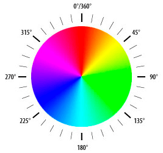
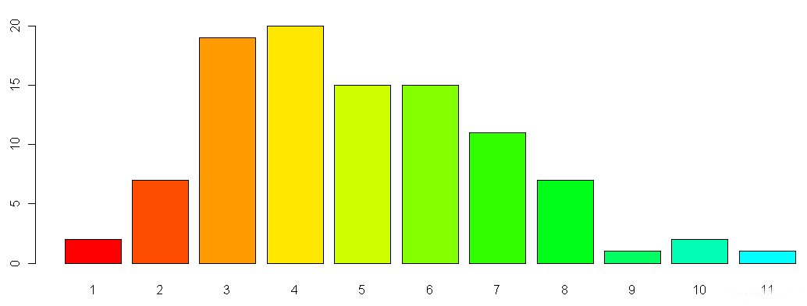
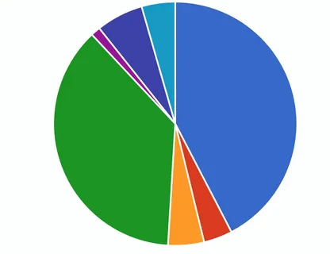
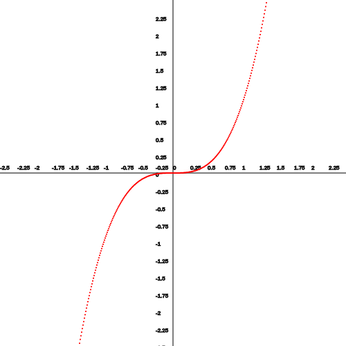
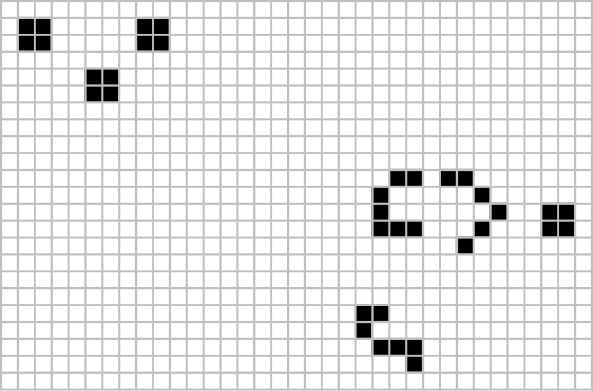

© IGP, январь 2025 г.
Дан массив данных. Отобразить в виде точек на координатной плоскости.
Совет: чтобы точка была видна используйте закрашенную окружность радиусом 1.
В качестве цвета закрашивания используйте любой цвет, отличный от цвета фона.
В настоящее время цвета могут быть указаны с помощью следующих методов:
Шестнадцатеричные значения цвета поддерживается всеми основными браузерами. Шестнадцатеричные значение цвета имеет следующий синтаксис:
#RRGGBB
Все значения должны быть между 00 и FF.
Например, значение #0000FF отображается как синий, потому что компонент BB установлен в его самое высокое значение (FF),
а другие установлены в самое низкое значение (00).
Допускается сокращать шестнадцатеричные числа до трех символов, если каждое из трех двухзначных чисел содержит одинаковые символы. Например, #0000FF можно записывать как #00F.
RGBA является более современным методом задания цвета, где:
Этот метод отличается от RGB тем, что он добавляет альфа-канал, который позволяет задать уровень прозрачности со значениями от 0 до 1, где:
<p style = "color: rgba(255, 0, 0, 0.1)">абзац красного цвета?</p>
<p style = "color: rgba(255, 0, 0, 0.2)">абзац красного цвета?</p>
<p style = "color: rgba(255, 0, 0, 0.3)">абзац красного цвета?</p>
<p style = "color: rgba(255, 0, 0, 0.4)">абзац красного цвета?</p>
<p style = "color: rgba(255, 0, 0, 0.5)">абзац красного цвета?</p>
абзац красного цвета?
абзац красного цвета?
абзац красного цвета?
абзац красного цвета?
абзац красного цвета?
К еще одному методу задания цвета относится HSL. HSL это аббревиатура, которая объединяет в себе первые буквы трех признаков:
При этом используется следующий синтаксис:
hsl(от 0° до 360°, от 0 до 100%, от 0% до 100%)
Градусы соответствуют цвету на круге оттенков:
Для насыщенности: 0% - полное отсутствие, 100% - чистый и яркий цвет.
Для осветленности: 0% (черный) до 100% (белый), значение 50% даёт чистый цвет.
HSL поддерживает прозрачность с помощью добавления альфа-канала, который задает уровень прозрачности со значениями от 0 до 1.
<p style = "color: hsla(0,100%,50%,0.1)">Я абзац красного цвета?</p>
<p style = "color: hsla(0,100%,50%,0.2)">Я абзац красного цвета?</p>
<p style = "color: hsla(0,100%,50%,0.3)">Я абзац красного цвета?</p>
<p style = "color: hsla(0,100%,50%,0.4)">Я абзац красного цвета?</p>
Я абзац красного цвета?
Я абзац красного цвета?
Я абзац красного цвета?
Я абзац красного цвета?
<p style="color:red;background:silver;">красный на сером<p>
красный на сером
Дан одномерный массив данных. Отобразить данные в виде столбчатых диаграмм.
Совет: для обображения столбчатой диаграммы используйте разноцветные прямоугольники, высота которых коррелирует со значением данных.
Отобразить данный одномерный массив в виде круговой диаграммы.
Совет: используйте различные цвета, площадь сектора коррелирует со значением элемента массива. Сумма всех элементов — полная площадь круга.
Разработать программу построения графиков функций.
Встроенная функция eval() позволяет выполнять строку кода.
let value = eval('1+1');
console.log(value); // 2
eval('y=3*2');
console.log(y); // 6
Функции представляют собой набор инструкций, которые можно повторно вызывать в различных частях программы по имени функции. Синтаксис определения функции:
function имя_функции(параметры){
// Инструкции
}
Использование функции:
function f(x){
return x**2;
}
y=f(x);
Для ввода удобно использовать элементы форм, такие как <input>,<button>
<input id="txt" type="text" placeholder="введите функцию"/>
<br/>
<button onclick="draw();">нарисовать график</button>
Для получения значений, введённых пользователем:
eval(document.getElementById("txt").value);
onclick="draw();" —вызов функции при обработке события нажатия на кнопку.
Отобразить двумерный массив в виде заполненных элементов поля.
Реализовать клеточный автомат (игра).
Кле́точный автома́т — дискретная модель, изучаемая в математике, физике, теоретической биологии и микромеханике.
Основой является пространство из прилегающих друг к другу клеток, образующих решётку. Каждая клетка может находиться в одном из конечного множества состояний (например, 1 и 0). Решётка может быть любой размерности, бесконечной или конечной, для решётки с конечными размерами часто предусматривается закольцованность при достижении границы.
Место действия игры — размеченная на клетки плоскость, которая может быть безграничной, ограниченной или замкнутой.
Каждая клетка на этой поверхности имеет восемь соседей, окружающих её, и может находиться в двух состояниях: быть «живой» (заполненной) или «мёртвой» (пустой).
Распределение живых клеток в начале игры называется первым поколением.
Каждое следующее поколение рассчитывается на основе предыдущего по таким правилам:
Игра прекращается, если:
Игрок не принимает активного участия в игре. Он лишь расставляет или генерирует начальную конфигурацию «живых» клеток, которые затем изменяются согласно правилам.
Разработать средство задания начальной конфигурации. Использовать механизм событий javascript.
Отображать текущее поколение и номер поколения
Совет: отображайте жителя в виде заполненного круга в клетке.
Если заинтересовала тема клеточных автоматов, о них можно прочитать в статье
Об обработке событий в HTML и JavaScript перезентация